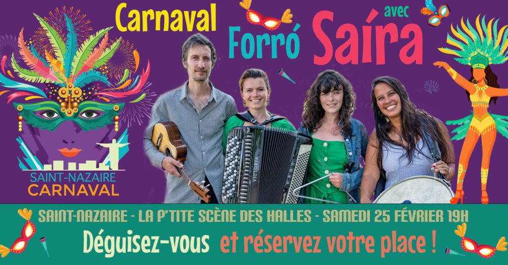

Carnaval forró avec Saíra en concert

Lieu : La P'tite Scène des Halles, Saint-Nazaire
C'est carnaval, déguisons-nous ! Du forró au coco, de la valse à la ciranda, Saíra, quartet franco-brésilien, invite à un bal brésilien populaire et chaleureux, inspiré du répertoire forró des années 70.
19h : ouverture des portes. 19h15 : initiation. 20h30 : concert. Prix libre entre 7 et 12 €.
Aussi au programme
- 25 février 2023 : Stages de danse forró avec Tatiana Barros (Espace civique Dubé, Saint-Nazaire)